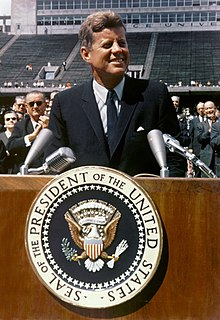
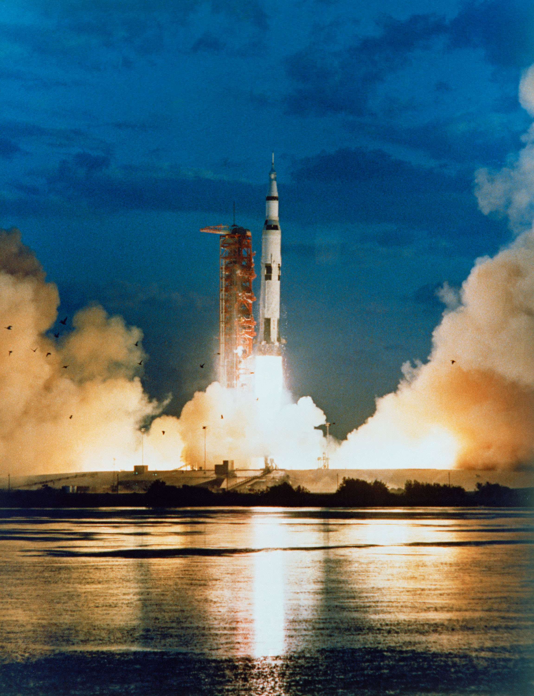
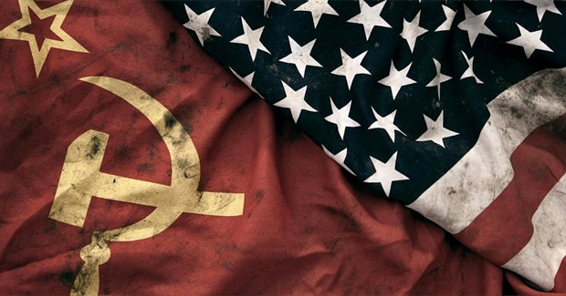
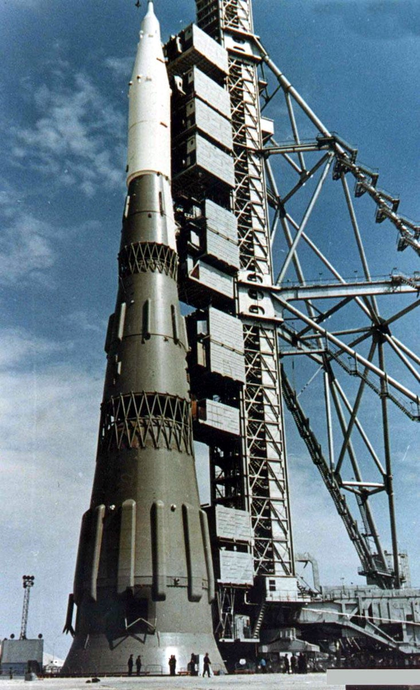

What People Believe





- https://www.ducksters.com/science/physics/space_exploration_timeline.php
- https://www.history.com/topics/cold-war/space-race
- https://www.goodreads.com/quotes/493205-we-choose-to-go-to-the-moon-in-this-decade
- https://www.nasa.gov/sites/default/files/atoms/files/historical-studies-societal-impact-spaceflight-ebook_tagged.pdf
- https://now.northropgrumman.com/how-technology-from-the-space-race-changed-the-world/
- https://www.techradar.com/au/news/world-of-tech/10-tech-breakthroughs-to-thank-the-space-race-for-617847
- https://www.youtube.com/watch?v=Vi6fjs_8Yx8